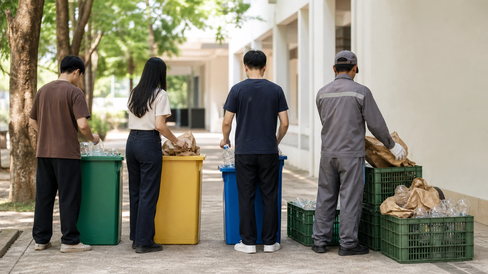

Illustrative

Proposed
NUOL Green University Model
A Zero-Waste Campus model for the National University of Laos — connecting source separation, traceable collection, practical training, and organic-waste composting.
Partner: National University of Laos
Baseline data, activities, and results will be published here as the pilot progresses.